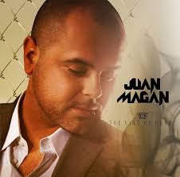
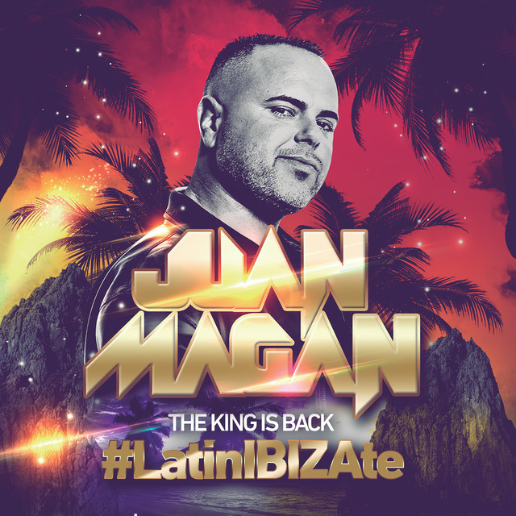
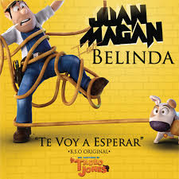
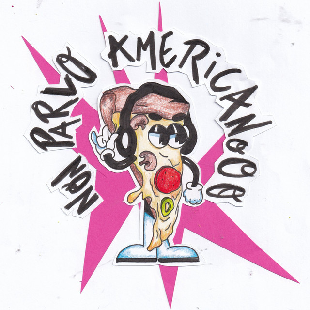
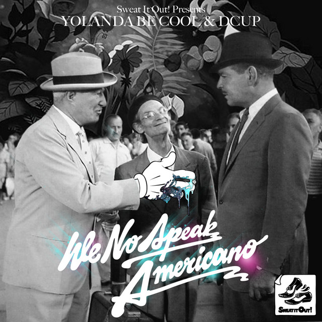

En esta sección podreis ver con mas detalle quien es Juan Magan y como fue su trayectoria a lo largo de la musica.
Juan Magan

Biografía
Juan Magan es un cantante, compositor y productor español, conocido por su estilo único que fusiona la música electrónica con ritmos latinos. Nacido el 30 de diciembre de 1978 en Badalona, España, Magan ha sido una figura influyente en la música urbana y ha colaborado con numerosos artistas destacados a lo largo de su carrera.
Desde sus inicios, Juan Magan ha lanzado una serie de éxitos que han resonado en las pistas de baile y en las listas de éxitos. Su música combina elementos de reguetón, pop y dance, lo que le ha permitido conquistar audiencias tanto en España como en América Latina.
Algunos de sus temas más conocidos incluyen "Bailando por ahí", "Ella no sigue modas" y "Te voy a esperar". Su estilo pegajoso y su energía contagiosa lo han convertido en un referente en la música de fiesta.
En resumen, Juan Magan es un artista que ha dejado huella significativa en la música latina y electrónica. Su capacidad para fusionar géneros y su estilo distintivo lo han posicionado como uno de los artistas más destacados de su generación.
Juan Magan tiene en spotify 1.701.126 seguidores. Y cuenta con mas de 9 Millones de oyentes mensuales. Gran parte de esos oyentes se encuentran en Madrid con 613.253 oyentes y en Barcelona con un poco menos con 391.215 oyentes mensuales.
Discografía
Juan Magan ha lanzado varios sencillos y EPs a lo largo de su carrera.
Estos son los mas conocidos:
Pero vmos a empezar hablando de sus albumes:
Álbumes
Juan Magan ha lanzado varios álbumes a lo largo de su carrera, cada uno de los cuales ha contribuido a su éxito y reconocimiento en la música latina y electrónica. A continuación, se presentan algunos de sus álbumes más destacados:
The King of Dance
The King is Back LatinIbizate
Quiero que sepas
4.0
Estos álbumes han sido fundamentales en la carrera de Juan Magan, consolidando su estilo único y su capacidad para crear música que resuena en las pistas de baile y en las listas de éxitos.
Album: The King of Dance
El álbum "The King of Dance" de Juan Magan, lanzado en 2010, es una colección de éxitos que fusiona ritmos latinos con música electrónica. Este trabajo consolidó su carrera y lo catapultó a la fama internacional. Con temas pegajosos y bailables, el álbum incluye sencillos como "Bailando por ahí" y "Ella no sigue modas", que se convirtieron en himnos de fiesta en España y América Latina.
La producción del álbum destaca por su energía contagiosa y su capacidad para hacer bailar a la audiencia. La combinación de ritmos latinos con influencias electrónicas ha sido una característica distintiva del estilo de Juan Magan, y "The King of Dance" es un claro ejemplo de su talento para crear música que resuena en las pistas de baile.
En resumen, "The King of Dance" es un álbum emblemático que marcó el inicio de la carrera exitosa de Juan Magan y lo estableció como uno de los artistas más influyentes en la música urbana y electrónica en España y más allá.
En este album podemos encontrar canciones como:
Canciones Destacadas
"Bailando por ahí"
"No sigue modas"
"Pegate mas"
"Bailando por el mundo"
La cancion "Bailando por el mundo" es un remix de "Bailando por ahi se encuentra en el mismo album con la colaboracion de Pitbull"
Album: The King is Back #LatinIBIZAte
El álbum "The King is Back #LatinIBIZAte" de Juan Magan, lanzado en 2015, es una explosión de ritmos latinos y electrónicos que captura la esencia de la fiesta ibicenca. Con una producción vibrante y pegajosa, el álbum incluye éxitos como "Te voy a esperar" y "Bailando por el mundo", que se convirtieron en himnos de verano en las playas de Ibiza.
La combinación de melodías pegajosas y ritmos bailables ha hecho que este álbum sea un favorito entre los amantes de la música de fiesta. La energía contagiosa de las canciones refleja el ambiente festivo de Ibiza, convirtiendo a Juan Magan en uno de los artistas más destacados de la escena musical electrónica latina.
En resumen, "The King is Back #LatinIBIZAte" es un álbum que celebra la cultura de fiesta ibicenca y reafirma el estatus de Juan Magan como uno de los reyes de la música electrónica latina.
En este album podemos encontrar canciones como:
Canciones Destacadas
"Si no te quisiera"
"Mal de amores"
"He Llorado (como un niño)"
"Falling in love"
Las cancion de: he llorado como un niño es colaborada con Gente de Zona. Y la cancion Falling in love es una colaboracion con la cantante Luciana.
Album: Quiero que sepas
El álbum "Quiero que sepas" de Juan Magan, lanzado en 2016, es una colección de éxitos que refleja su estilo característico de fusión de ritmos latinos y electrónicos. Con una producción vibrante y pegajosa, el álbum incluye sencillos como "Te voy a esperar" y "Bailando por el mundo", que se convirtieron en himnos de fiesta en España y América Latina.
La energía contagiosa de las canciones y la habilidad de Juan Magan para crear melodías pegajosas han hecho que este álbum sea un favorito entre los amantes de la música de fiesta. La combinación de ritmos latinos con influencias electrónicas ha sido una característica distintiva del estilo de Juan Magan, y "Quiero que sepas" es un claro ejemplo de su talento para crear música que resuena en las pistas de baile.
En resumen, "Quiero que sepas" es un álbum emblemático que reafirma el estatus de Juan Magan como uno de los artistas más influyentes en la música urbana y electrónica en España y más allá.
En este album podemos encontrar canciones como:
Canciones Destacadas
"Baila Conmigo"
"Soy un Don"
"Latina en Ibiza"
La cancionm: baila conmigo es mi favorita de este album.
Album: 4.0
El álbum "4.0" de Juan Magan, lanzado en 2019, es una explosión de ritmos latinos y electrónicos que captura la esencia de la fiesta ibicenca. Con una producción vibrante y pegajosa, el álbum incluye éxitos como "Te voy a esperar" y "Bailando por el mundo", que se convirtieron en himnos de verano en las playas de Ibiza.
La combinación de melodías pegajosas y ritmos bailables ha hecho que este álbum sea un favorito entre los amantes de la música de fiesta. La energía contagiosa de las canciones refleja el ambiente festivo de Ibiza, convirtiendo a Juan Magan en uno de los artistas más destacados de la escena musical electrónica latina.
En resumen, "4.0" es un álbum que celebra la cultura de fiesta ibicenca y reafirma el estatus de Juan Magan como uno de los reyes de la música electrónica latina.
En este album podemos encontrar canciones como:
Canciones Destacadas
"Si te atreves (Canción de la pelicula "Los Japón")"
"Usted (.ft Mala Rodriguez)"
"Sobrenatural (.ft Alvaro Soler, Mariele Hazlo)"
La cancion: Usted es de mis favoritas de este album.
Sencillos
Juan Magan ha lanzado varios sencillos a lo largo de su carrera, algunos de los cuales han sido grandes éxitos en las listas de música latina y electrónica. Estos son algunos de sus sencillos más conocidos:
Sencillos Destacados
"Te voy a Esperar .ft Belinda (Original de la pelicula Tadeo Jones)
La cancion "Te voy a esperar" es la cancion original de la pelicula Tadeo Jones, una pelicula de animacion española que se ha convertido en un gran exito en España y Latinoamerica.
Cuando Zarpa el Amor. (Camela .ft Juan Magan)
Juan Magan ha lanzado junto a Camela una cancion recordando los mejores momentos de Camela, esa cancion esta en el album de Camela "Rebobinando 25 años"
Non Parlo Americano
Antes de llegar a esta cancion vamos a adentrarnos un poco mas sobre sus origenes:
Historia del origen de NON Parlo Americano.
NON Parlo Americano es una canción con la colaboración con Lerica, la cancion puede parecer una reinterpretacion moderna de la cancion "We no speack Americano" si es verdad, pero tiene un par de matices.
La cancion original no es We no speak Americano, sino que la cancion original es: Tu vuò fà l`americano, una canción italiana de los años `50s, cuya referencia es imitando a los americanos. Luego en 2010 la canción quie todos conocemos como, "We no Speak Americano" esta canción si que es en inglés, siendo asi un exito internacional de Yolanda Be Cool & DCUPM, integrando asi en dicha canción Electronica/Dance, basado en el tema original. Aqui os dejo la cancion que se gano en 2010 un exito internacional para recordar aquellos momentos.
We No Speak Americano
(2010)
Non Parlo Americano
(2025)
Y en el año 2025 esta cancion tuvo una remodelación con electro latino, con guiños a la canción original, y nueva letra.